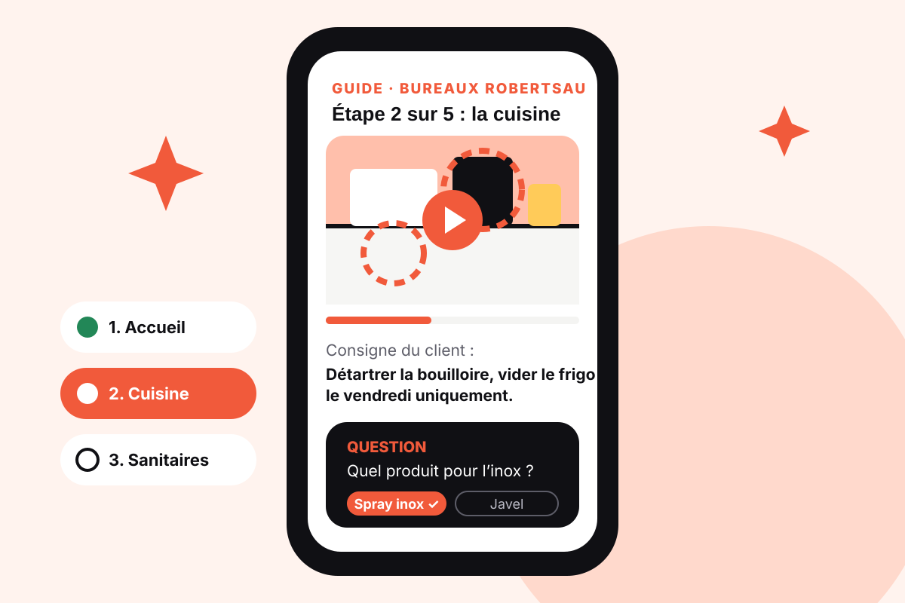
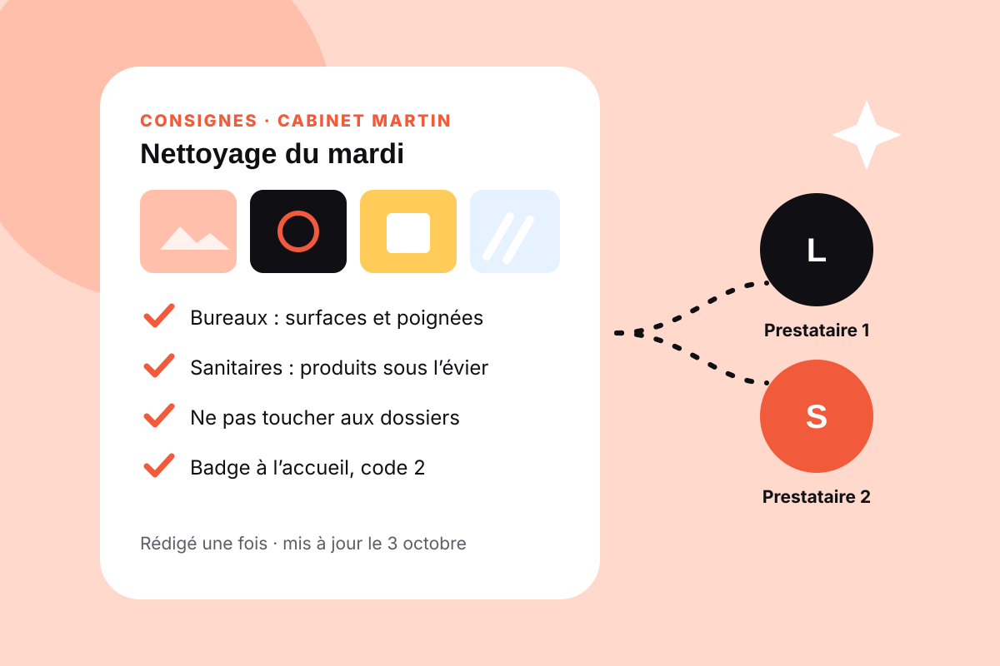
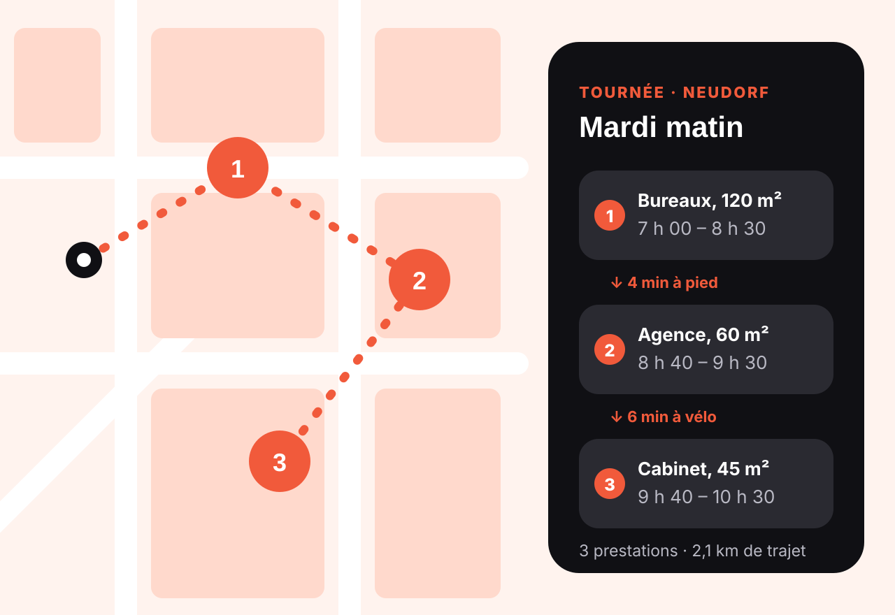
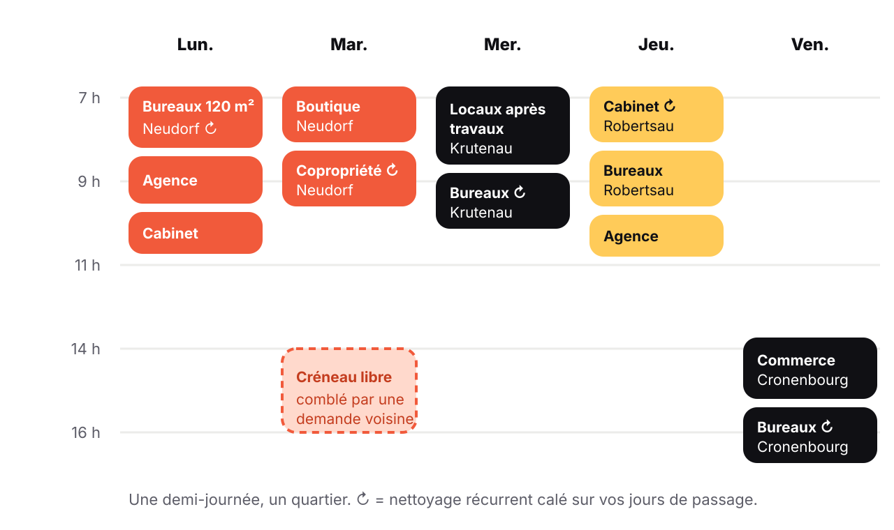

Moins de trajets
Des prestations voisines enchaînées, au lieu d’un aller-retour pour une seule intervention.
Fonctionnalités
Un guide vidéo personnalisé pour chaque prestation, des consignes données une seule fois, un agenda qui groupe les prestations par quartier et un assistant pour les deux côtés.

Quatre outils,un local propre.Guide vidéo personnalisé
À partir de vos photos et de votre description, l’IA prépare un guide vidéo propre à votre local : les zones à traiter entourées sur vos photos, les gestes adaptés à chaque surface, et vos consignes au bon moment.
Le prestataire répond à de courtes questions à chaque étape. Le guide validé apparaît sur la prestation.

Consignes enregistrées
Vos photos, vos consignes, vos codes d’accès et l’emplacement des produits forment la fiche de vos locaux. Quand un prestataire change, le suivant reçoit la même fiche et le même guide : vous n’avez rien à réexpliquer.
Une modification se fait en un clic et s’applique à toutes les prestations suivantes.
Estimer un nettoyageAgenda intelligent Bientôt disponible
Pour un professionnel, une prestation isolée à l’autre bout de la ville coûte souvent plus en trajet qu’elle ne rapporte. L’agenda intelligent regroupe les demandes d’un même quartier et propose des tournées complètes.
Il tient compte de l’adresse de chaque local, de la durée estimée du nettoyage, de la plage horaire acceptée par le client et du temps de trajet réel entre deux adresses, à pied, à vélo ou en voiture.

Comment une tournée est construite
Adresse, durée estimée et plage horaire acceptée : l’agenda encourage les clients à proposer une plage plutôt qu’une heure fixe.
Les demandes d’un même quartier, dans un rayon de quelques kilomètres, sont rassemblées sur la même demi-journée.
L’enchaînement le plus court, avec le temps de trajet réel et une marge entre deux locaux.
Le pro voit la tournée entière : nombre de prestations, durée totale, distance parcourue. Il l’accepte en une fois.
Une annulation libère un créneau : l’agenda propose aussitôt une demande voisine pour le remplir.
Une semaine type
Exemple de semaine d’un professionnel : chaque demi-journée reste dans un seul quartier, et les nettoyages récurrents se calent sur les jours de passage.

Ce que l’agenda change
Dès que le volume d’un quartier le permet, l’agenda cherche à remplir les journées de prestations voisines.
Des prestations voisines enchaînées, au lieu d’un aller-retour pour une seule intervention.
Des tournées complètes et des créneaux libérés aussitôt reproposés.
Les contrats hebdomadaires se calent sur vos jours de passage dans le quartier.
Pour l’entreprise, une plage horaire souple et un prestataire qui arrive à l’heure, parce qu’il était tout près.
Assistant Q DEAL
Le chatbot répond aux questions courantes des entreprises (estimation, consignes, suivi d’une prestation) et des prestataires (guide vidéo, accès au local, déclarations). Il connaît la fiche de la prestation en cours.
Essayez la démonstration avec la bulle orange en bas à droite de l’écran.
Et aussi
Les prestations proches de la zone et des disponibilités de chaque prestataire.
L’entreprise note chaque passage, le prestataire construit sa réputation.
Rappels URSSAF et assurance RC Pro pour les étudiants. En savoir plus
Une première durée de nettoyage à partir de vos photos. Estimer
Rejoignez Q DEAL
Entreprise ou prestataire, commencez dès aujourd’hui.